The Beginning
1st Sino War...
The Civil War
A New Start
Rise and Glory
Mao's Downfall
Deng's Cat
Mao's Resurgence...
Cultural Revolution
Back...
A New Start...
Square Without Peace
Deng's Legacy
CCP: How the Chinese Communist Party came to power and evolved over the years.
How China went from a poor country to becoming the world's second power, with a socialist government and a capitalist economy.
Summary
One of the most influential countries today, China carries with it a vast history, various controversies, and policies that not only raise questions but also spark intrigue among groups that argue whether these actions are right or wrong. Something that in recent years, with globalization, has become increasingly accessible and reached by people.
The Beginning
At the beginning of the 19th century, the English East India Company had a monopoly on the trade of tea from China. Purchased in Canton, the product was resold in England for double the price. In eighty years, this business jumped from 12 thousand tons annually in 1800 to almost 90 thousand tons in the 1880s.
However, the Anglo-Chinese exchange was very unequal. The Chinese had no interest in Western products, which they usually viewed with strangeness and sometimes curiosity. They were, however, big consumers of opium, a drug produced in India and sold by the English East India Company since the 18th century. It was a lucrative and illegal trade: opium consumption had been prohibited by the Chinese government since 1800. Even though illegal, opium was used by elite sectors, including high-ranking officials. In 1839, vigorous measures were taken by the Chinese emperor to end the opium trade, with the confiscation of the product and a demand for the English to end the business. A conflict began known as the First Opium War (1839-1842).
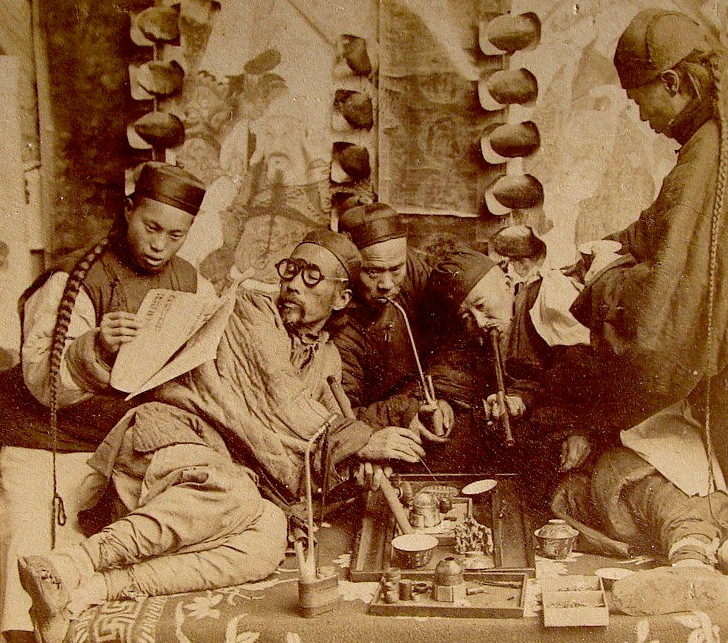First Sino-Japanese War
Japan also joined this conquest, starting with the Korean Peninsula, then linked to China. The goal was to seize the iron and coal mines there. In August 1894, the Chinese navy bombarded Japanese boats, starting the First Sino-Japanese War. Japan, with a more powerful fleet and army, took Formosa, now Taiwan, which became Japanese territory. The conflict, won by Japan in 1895, yielded the country several territories and commercial posts. Japanese expansion was viewed with suspicion by European powers. Russia, for example, coveted Korea and Manchuria. In this case, it was traditional colonialism, mainly concerned with territorial conquest and state revenues.
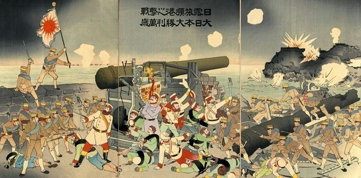The Civil War
In 1911, representatives from various provinces overthrew the monarchy and established the republic. With it, the National People's Party, the Kuomintang, emerged. In defense of nationalism, democracy, and the well-being of the population, entrepreneurs, southern landowners, and state officials organized within this party. In 1921, the Chinese Communist Party (CCP) was founded. The two factions, although rivals, joined forces to maintain the republic and oppose the large landowners in the northern part of the country. However, in 1927, Chiang Kai-shek took over the leadership of the Kuomintang and began persecuting the CCP. Communist refugees in rural areas discovered a strong peasant movement and incorporated it into the revolutionary struggle. One of the communist leaders, Mao Zedong, became directly involved in organizing the peasants. As a result, the CCP had 30,000 armed men at its disposal.
To eliminate communist bases, Chiang Kai-shek launched a large military offensive. Mao Zedong then led the withdrawal of communist troops between 1934 and 1935. About 100,000 men covered almost 10,000 kilometers. The episode became known as the Long March. In 1931, when Japan invaded China, the fight to defend the country united the two political opponents: the Kuomintang and the CCP. This alliance lasted from 1937 until the end of World War II in 1945.

The communists gained great popularity among peasants and workers. By the end of the war in 1945, the CCP had a significant military force and controlled several regions of China. The People's Liberation Army, the communist military force, faced and defeated the Kuomintang troops. Chiang Kai-shek sought refuge on the island of Formosa (present-day Taiwan). On October 19, 1949, the CCP took power and proclaimed the People's Republic of China, while the island of Formosa became the Republic of China.
Like any communist, Mao focused his government on a single state. As a good communist leader, he directed his main actions towards rural workers (peasants), urban workers (workers), and the military.
A Fresh Start
Unfortunately, despite promising changes, they were not immediate. China was still an archaic country, with no technology and few tools. The country barely had roads, paved streets, and factories. Poverty dominated the entire country. The peasants, who made up 94% of the population, cultivated the land with tools powered by oxen and manually, something outdated for the time. They were exploited, reduced to subordinate roles, and had no rights, so Mao promised land.
Fortunately, these promises of land, albeit in a cruel way, were fulfilled. Mao encouraged the people to take landowners and mete out "justice" with their own hands, namely killing and torturing them. According to Mao, one should use their own hands to be part of the revolutionary order. The conquered lands were then distributed equally, and each family received a portion under the vigilance of a local party representative. Far from the cameras, an important figure emerged, Deng Xiaoping.
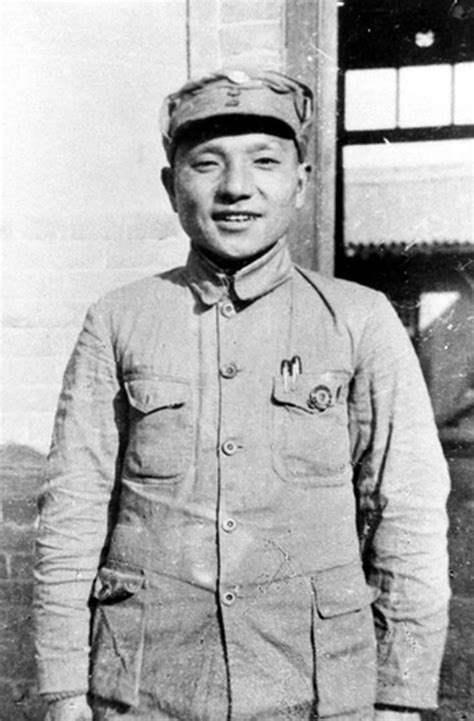Deng Xiaoping, Mao Zedong's best friend, was one of the main figures in the revolution during the war and the early days of communism in the country. He was responsible for organizing the lands and representatives of each region.
With Mao's achievement, he gained the trust and love of the peasants, and the party made various propaganda to exalt this. The most famous of them said that the communists are the seeds and the people are the soil, and that their function is to unite with the people and take root and flourish. In a short time, 19 million militants were in the country, all on the same side.
Rise and Glory
Mao was not satisfied; he wanted to promote his ideas. So, he closed the country. In the last decades, China had suffered a lot from invasion and occupation by other countries that exploited them, something that had dismembered the country. The lives of these Chinese fell into the hands of foreigners, and ideas from the West were like plagues. So Mao expelled foreigners, missionaries, and their religions, thinking that this would save the country.
Mao's plan was to modernize China using the Soviet model. He put all his strength into the First Five-Year Plan. The idea was that China had to catch up and surpass other countries to create a great world power. In a short time, industrialization and collectivization of agriculture occurred, and the country developed.
Mao's measures had a high price: 15 million Chinese died of hunger. But despite the food shortage, China continued to export food to other countries to earn foreign currency. Mao's plan was more than ambitious; it was megalomaniacal. He transformed the lives of millions of Chinese into a nightmare with the sole purpose of creating a world power.
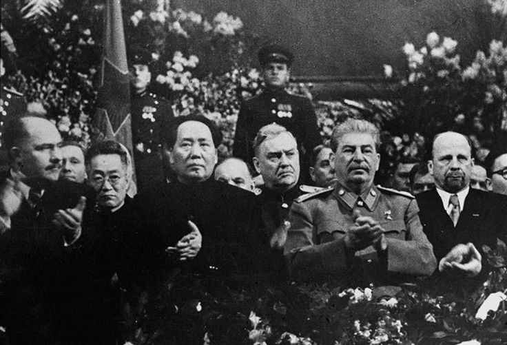In 1958, Mao's plan, called the Great Leap Forward, was launched, and the Chinese were asked to produce steel in their backyards. Each family had to produce a certain amount. But soon the plan became unfeasible, and the quality of the metal produced was deplorable. The Chinese came to use the woks as molds for the production of steel. With such a plan, the economy went bankrupt, and the peasants suffered.
Soon, Deng saw that the country was improving, that Mao was not a charlatan. Deng then made great efforts to climb the political ranks until he assumed the general committee, being involved in major decisions.
Education in China had been a privilege for many years; only the nobility had the right to this virtue. Most of the population was illiterate, impacting decision-making, which was mainly in the hands of the nobles. So, Mao invested in education, and as he had said, a great power must have an educated people. The entire youth ended up in school, resulting in a significant reduction in illiteracy rates for the country.
Happy with the achievements and feeling superior, Mao proclaimed that by 2001, China would become a great industrialized socialist power. In a short time, he reached the peak of his power, and everyone idolized him. For everyone, his word was the law.
However, behind an apparently good government, terrible facts were hidden. China was experiencing the empire of terror; any real or imagined opposition was taken to concentration camps, where they suffered forced labor and brainwashing to eliminate any desire to oppose. Under Mao's reign, at least 50 million people went to concentration camps.
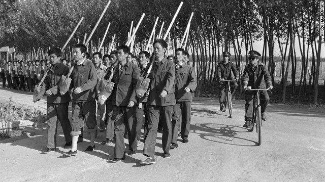Mao's Downfall
In 1957, a different case occurred; sparrows were accused of eating the crops. To eliminate the birds, Mao told his people to make them fly until they fell. Unfortunately, Mao forgot a detail: without predators, insects multiply and proliferate. In the following years, the harvests were devastated. The CCP did not care to film the bird massacre, unlike the massacre committed against Mao's opponents, especially during the five murderous campaigns between 1950 and 1960, due to the Hundred Flowers Movement, where the government allowed certain criticisms. However, faced with them, Mao became furious and promoted the campaigns, punishing the critics.
Deng Xiaoping, involved in the machinery of power, became a dedicated cog. On April 4, 1957, Mao was shocked by the first satellite that entered Earth's orbit, a technological achievement of which the Soviets were very proud. It turned into a celebration at the October festival in the Soviet Union. Mao was present at this festival, and the successor to Stalin reserved an honored place for Mao by his side, with Deng also present.
Seeing that the Soviets were very advanced and that China was ridiculed by the Soviets for being "dependent" on the Moscow government, Mao made a risky decision to surpass the Reds in all aspects. He was about to promote the Great Leap. Mao shared his decision with Deng, but Deng had doubts about the idea due to the country having just emerged from a rural situation and probably not being able to surpass Russia. Despite this, being stubborn, Mao initiated his plan. In the second quarter of 1958, Mao launched his unprecedented campaign to achieve his ambitious dream. Almost overnight, the people were militarized, and peasants were assigned to work brigades grouped by communes. They worked at a frenetic pace, always motivated to move forward for the sake of the party. Each commune was responsible for each member, from birth to death; family meals were prohibited, and they had to eat all meals in the canteen, whether they liked it or not. Mao wanted to produce twice as much steel as the UK in 5 years; the leader asked everyone to surrender their metal items.
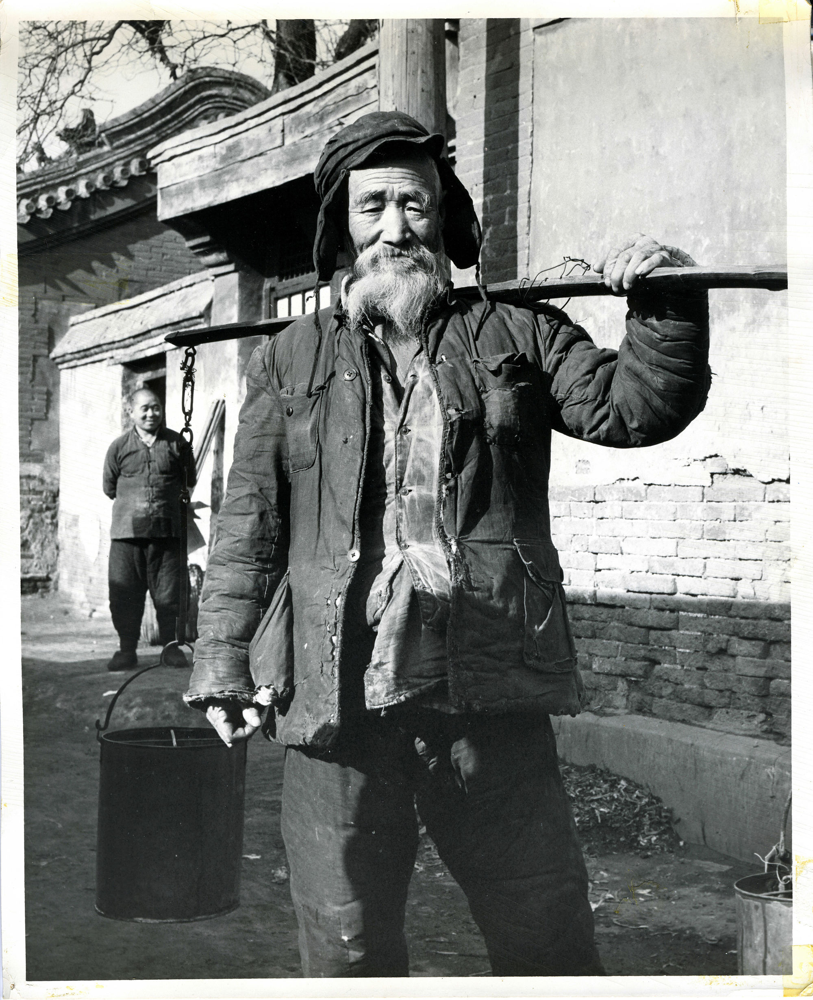To melt the iron, Mao ordered them to use all the village furnaces and build others as well. So, improvised metal casting furnaces appeared all over China. Party members pursued the people to meet the goal.

The fields were then neglected; no seeds were planted, and all the work was in vain. The metals were of poor quality, making them practically unusable. The people were then in danger of starving; there was no harvest. Along with this, Soviet engineers left the country, leading to the plan's failure. The leaders then worried about a possible revolt of the people. So, the Minister of Defense, Peng Dehuai, revolted and warned that dark days were ahead. Mao, who did not accept criticism, became furious. Then Mao said, "Better a Communist than an expert." The shocked committee then supported him. Deng, who was not present at the meeting, was disappointed but did not oppose Mao to avoid future problems.
As predicted, the 1959 harvest was a disaster. For the next 2 years, the already weakened and disorganized country suffered from hardships. In the summer of 1961, hunger and misery prevailed, so after isolating between 15 to 35 million Chinese, press censorship was adopted. It took about 20 years for the truth to come to the public. So, in early 1960, China was basically on the verge of death. All the power and glory expected disappeared; Mao had failed. The leader was flawed. Mao, intimidated by his colleagues, decided to admit his mistakes for the first and last time.
Deng's Cat
So Mao stepped down from power, and his replacement was Liu Shaoqi, a man less predictable than Mao, according to the party and his right-hand man Deng Xiaoping. Mao pretended to agree with the decision. However, everyone knew it was a false decision; Mao still held power and the presidency of the Communist Party. Deng remained cautious because he knew it wasn't the end.
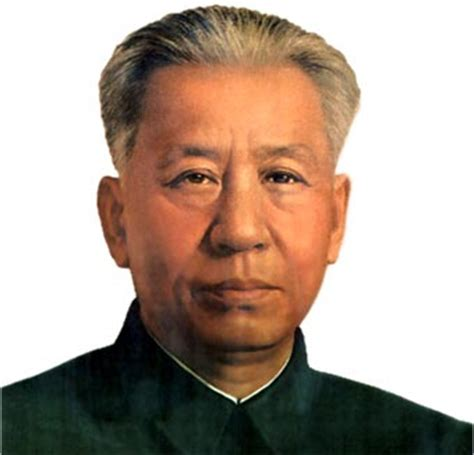Now it was Liu and Deng who received foreign leaders, and together they fought to heal the country's wounds. The Great Leap was forgotten, and for 3 years, the Chinese could breathe. Deng allowed people to cultivate their own lands, and the harvests prospered. He also permitted open-air markets, and supplies increased. Daily life regained leisure time; even on Sundays, the Chinese could go on family outings. And they crowded bookstores because they could read.
Deng was a pragmatic man; once he declared:
– It doesn't matter if the cat is white or black, as long as it catches mice –
In other words, he meant that if the economy works, the growth model is good. Therefore, he preferred being an expert over being a communist.
Mao Resurfaces, and His Guard
Meanwhile, Mao had not given up on political life; on the contrary, he was traveling across the country on his private train. In cities that managed to escape the Great Leap disaster, his popularity among the youth was still intact. By handing over the government to Liu and Deng, his words became sacred. After the Great Leap disaster, Mao stopped promising power to the Chinese for some time. Another plan emerged in him; he wanted Beijing to replace Moscow in the hearts of all revolutionaries worldwide. So, on July 16, 1966, Mao re-entered the scene. For more than 2 hours, he sailed on the Yangtze River with various young people. It was all a message to the youth; he was asking them to return to the fight against those who lost their ideals. The great proletarian revolution had begun.
Without questioning, millions of children and teenagers enrolled in a new organization, the Red Guards, which Mao would turn into a mass destruction machine. He provided the enchanted crowds with a little red book containing a small collection of his best quotes. The little red book became the small Bible of the Red Guards. Cautiously, he set a target: the CCP, aiming to eliminate traitors who wanted to implant capitalist ideas. Mao said, "Let's unmask them," even without specifying names; everyone knew who the targets were. So, the fanatical Red Guards obeyed, and leaders, both small and large, were at their mercy. They were arrested, mistreated, beaten, tortured, and humiliated in stadiums crowded with Red Guards. Moreover, any object reminiscent of the Western capitalist world was destroyed, including artworks, religious temples, and any objects that came from outside the country.

Then the two most important leaders ended up falling, Liu and Deng. One was killed, and the other was exiled, where he began repairing tractors. In the famous announcements against the leaders, the cats from Deng's famous quote appeared with the faces of the leaders, about to be killed by a Red Guard.
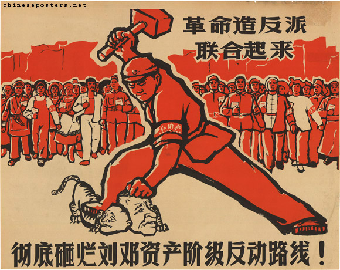Cultural Revolution
Mao's return was marked by much excitement and chaos, as the Chinese were thrilled with the leader's comeback. Images of Mao were taken and published worldwide, turning him into a pop culture icon.

When a French press interviewed young Chinese, they expressed trust and strong belief in the party and the president. For them, Mao could do no wrong.
Seven years later, the cultural revolution came to an end. The Maoist Orthodox Doctrine had become the norm, governing the lives of the Chinese. Mao's thoughts were omnipresent, and everyone shared the same ideas due to the Red Book. The few tourists entering China sympathized with Mao's ideas, claiming that the communist promises had finally been fulfilled, with complete financial equality and equal rights regardless of gender being a reality. China was, for them, synonymous with revolution.
However, behind China's apparent reality was complete chaos. Due to the almost complete abolition of the members of the CCP, the country lacked administrators leading it toward success. The leaders chosen were often the most incompetent; factories operated slowly with minimal production. Above all, China was regressing; universities had been closed for over three years. The millions of students who formed the Red Guard were dispatched throughout the country. After restoring Mao to the throne, they became too dangerous. Mao always distrusted intellectuals, so he got rid of them.
In the desolate borders of China, people lived in misery, hunger, and worked long hours. In the cities, people became apathetic as the hope for the glory they had fought so hard to achieve diminished over time. Surrounded by a wall, China was stagnant, repression worse than ever. During the cultural revolution, 100 million Chinese were persecuted, and about 3 million died. But no matter how hard they tried, the country remained stagnant.
A Dazzling Restart
Deng awaited a momentum to give to the country. As the party still needed Deng, his former enemies supported his return to the government. In 1977, Deng rebuilt the party and reinstated all politicians who were banned after the Cultural Revolution. With their support, Deng strengthened his efforts. By the end of 1978, things were picking up. China finally opened its borders, ceasing to be a closed country. A breeze of freedom reached the nation, and China was relaxing. Products gradually arrived, and young people could finally express themselves.
To turn into a power, Deng rejected the idea that China should work alone and eagerly embraced changes. Deng then visited the U.S., where he presented China as a country with over 1 billion people, low costs, a willingness to learn new techniques, and a thirst for consuming capitalist products. The U.S. was very interested.
China's learning began in 1979. The country had no experience in business, so Deng allowed the opening of the first mixed economy companies, where the Chinese learned how international trade works.
Ten years later, Deng's China had surpassed Mao's. In 1989, Mao's portrait was still in Tiananmen Square, but it didn't impress young people protesting for democracy. The foreign press was having a field day. For the first time since 1949, the Chinese could protest, and regime opponents could express themselves. This was the price Deng had to pay for the openness that occurred. Within a decade, China had transformed. From Tiananmen Square to the economy, it was at its peak.
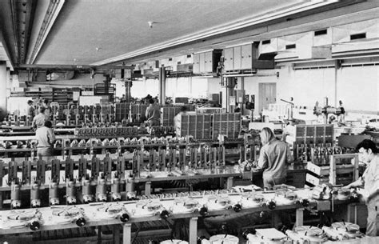So communist China had become rich. The middle class kept growing, and products manufactured in China were conquering the world. China was gradually becoming the world's workshop. The rural exodus was happening as farmers wanted to move to the city for a better life for their children. Traditional Chinese society was on its way out, and the CCP was also changing. Many were trading the mandarin collar for a suit.
Square Without Heavenly Peace
Unfortunately, behind the great changes, Deng, infuriated, ordered tanks to annihilate the protesters in Tiananmen Square. It was a complete massacre, thousands died, and the once peaceful protests were met with tanks and bullets.
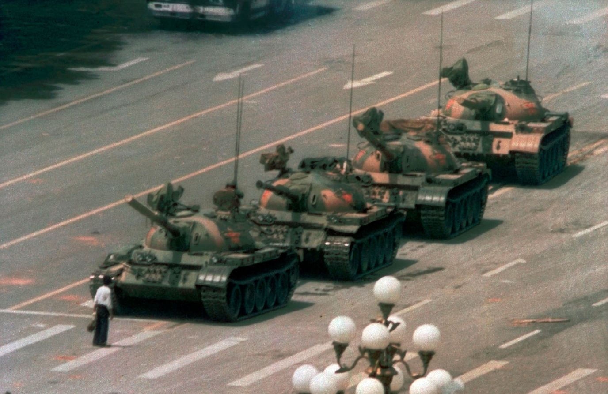Despite the negative views of China due to Deng's crimes, he was unashamed of them. Even though he had opened China, he did not want to take his party out of power, and this paradox would be his legacy. Deng Xiaoping died in 1997, but it was through his legacy that China grew beyond what he expected. By opening the country, Deng allowed industries to come to China.
The Fruit of Deng
Currently, China exports the same volume in 6 hours as it did in the entire year of 1978. It is now the epicenter of cutting-edge technologies. In history, no country has grown so much in such a short period. The Chinese themselves have profited from it, and the pleasures and vices of a consumer society are no longer a mystery to them.
China is now a self-sufficient country, no longer dependent on technology from other countries. As the second-largest economy, China will probably take the first position in the ranking of the most influential countries in the next few years. It has become a model to be followed in education, technology, and the economy. It is also a model of strategy as it managed to make its currency grow and be used in transactions. In a few years, it could surpass the American currency, the Dollar, given the growing value of the Chinese currency and the decline of the Dollar due to the bad decisions made by the Washington government.
While becoming one of the world's largest economies, Mao's image still adorns the cells of the Chinese currency. His portrait still dominates Tiananmen Square, but leaders rarely touch on his name. The social market economy expression entered the constitution, but China has become a capitalist power with much influence. This paradox is due to the great Deng Xiaoping. In short, Mao promised to turn China into one of the greatest powers, but it was Deng Xiaoping who fulfilled the promise.
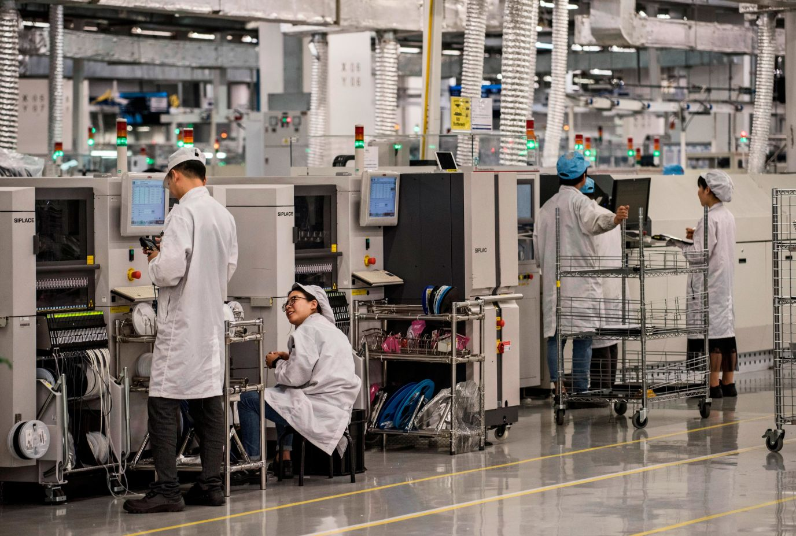